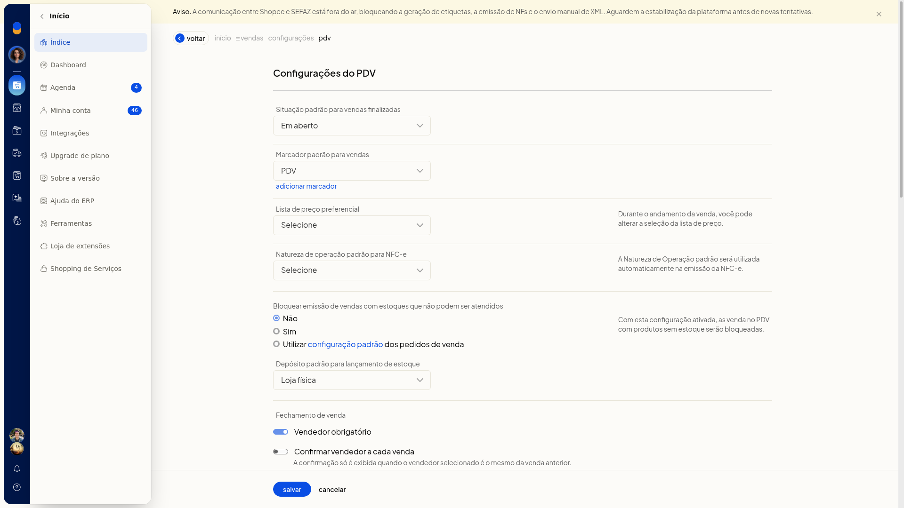

Configurar o PDV
No PDV da Olist, você define as regras da loja física numa única tela: a natureza de operação usada automaticamente na NFC-e, o depósito padrão do estoque e o fechamento da venda e do caixa. Também é possível escolher situação, marcador, lista de preço, impressão, desconto, separação de recebimento, balança e atalhos de produtos.
A tela fica em Configurações > Configurações ERP, na categoria Vendas.
Importante
- Natureza de operação, depósito, lista de preço, marcador e operadores de caixa não são criados nesta tela. As listas mostram registros já cadastrados. Para incluir um marcador, use o link adicionar marcador, ao lado de Marcador padrão para vendas.
- Com Vendedor obrigatório, a venda só é concluída se o vendedor for informado. A confirmação do vendedor só aparece quando o vendedor selecionado é o mesmo da venda anterior.
- Com Cliente obrigatório (com CPF ou CNPJ), o cliente precisa ter CPF ou CNPJ informado para concluir a venda.
- A emissão automática pela NFCe desabilita a emissão de NFe na conclusão da venda.
- Com Habilitar separação entre venda e recebimento, a venda finalizada pelo vendedor é repassada ao operador de caixa, que confirma o recebimento e emite a nota. O operador de caixa não edita itens, formas de pagamento nem desconto.
Instruções
Os campos desta tela não são obrigatórios.
-
Acesse Configurações > Configurações ERP.
-
Na categoria Vendas, clique em Configurações do PDV.

Venda, nota e estoque
-
Em Situação padrão para vendas finalizadas, escolha Em aberto, Aprovado, Preparando envio, Faturado, Pronto para envio, Enviado ou Entregue.
-
Em Marcador padrão para vendas, escolha Sem marcador ou um marcador já cadastrado.
-
Em Lista de preço preferencial, escolha Selecione ou uma lista já cadastrada. A lista pode ser alterada durante a venda. Esta opção não aparece para empresas com PAF-NFC-e.
-
Em Natureza de operação padrão para NFC-e, escolha uma natureza já cadastrada ou deixe Selecione. A natureza padrão é usada automaticamente na emissão da NFC-e.
-
Em Depósito padrão para lançamento de estoque, escolha o depósito das movimentações do PDV.
-
Em Bloquear emissão de vendas com estoques que não podem ser atendidos, escolha Não, Sim ou Utilizar configuração padrão dos pedidos de venda. Com Sim, a venda no PDV de produtos sem estoque é bloqueada.

Fechamento de venda
- Marque as regras de fechamento que deseja usar. O fluxo de fechamento de venda do PDV segue essa seleção.
-
Vendedor obrigatório
-
Confirmar vendedor a cada venda
-
Cliente obrigatório (com CPF ou CNPJ)
-
Bloquear vendas com total recebido inferior ao total da venda
-
Permitir a venda de produtos não cadastrados
-
Bloquear alteração de preço unitário do item
-
Agrupamento automático de produtos iguais: produtos com o mesmo preço, inseridos manualmente ou por código de barras, são agrupados na visualização
-
Mostrar tela com formas de recebimento: exibe as formas de recebimento ao fechar a venda

- Em Tipo de nota fiscal padrão no fechamento da venda, escolha Emitir automaticamente a NFCe ou Permitir a emissão de NFe.
- Em Impressão automática ao finalizar venda, marque Recibo, NFCe e Recibo de troca. Use Selecionar todas as opções para marcar as três.
- Marque Voltar automaticamente ao início após enviar NFC-e para impressão se quiser que o PDV volte à tela inicial depois que a NFC-e for autorizada e enviada para impressão automática.
- Em Desconto máximo nos itens e em Desconto máximo nos itens para gerente, digite o percentual com vírgula decimal. Use 100% se não houver percentual preferencial.

Fechamento de caixa
- Marque como o caixa deve funcionar. O fluxo de fechamento de caixa do PDV segue essa seleção.
- Controlar abertura e fechamento de caixa
- Considerar recebimentos do "faturar pré-venda" para fechamento de caixa: esses recebimentos entram no relatório de controle de caixa e movimentações. A opção não aparece para empresas com PAF-NFC-e. Se ela não aparecer para você, peça acesso ao administrador da conta.
- Permitir compartilhamento de caixa entre usuários: quem opera o PDV usa o mesmo caixa
- Exibir valores de cada forma de recebimento no fechamento de caixa
- Realizar abertura de caixa com último valor de fechamento: preenche o dinheiro do último fechamento de caixa
Separação, balança e atalhos
- Marque Habilitar separação entre venda e recebimento se a venda e o recebimento forem feitos por pessoas diferentes.
- Em Operadores de caixa, marque quem já está cadastrado na conta. Use Selecionar todos para marcar toda a lista.
- Em Composição do código de barras gerado na balança, escolha Por preço ou Por peso.
- Marque Habilitar acesso rápido aos produtos para exibir produtos em destaque como atalhos na tela de vendas do PDV. A seção se chama Atalhos na tela de vendas.

- Clique em Salvar para gravar as regras do PDV ou em Cancelar para sair sem gravar.